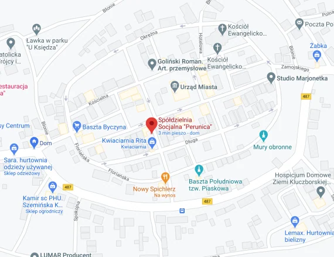
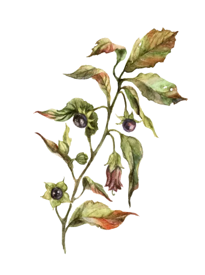

Spółdzielnia Socjalna Perunica,
ul. Dworcowa 7, 46-220 Byczyna,
NIP: 751-177-32-15,
REGON: 161576666
E-mail:
olaarkona@gmail.com,
aniaarkona@gmail.com
Telefon (8-16): +48 785 207 065

Jesteśmy w social mediach!